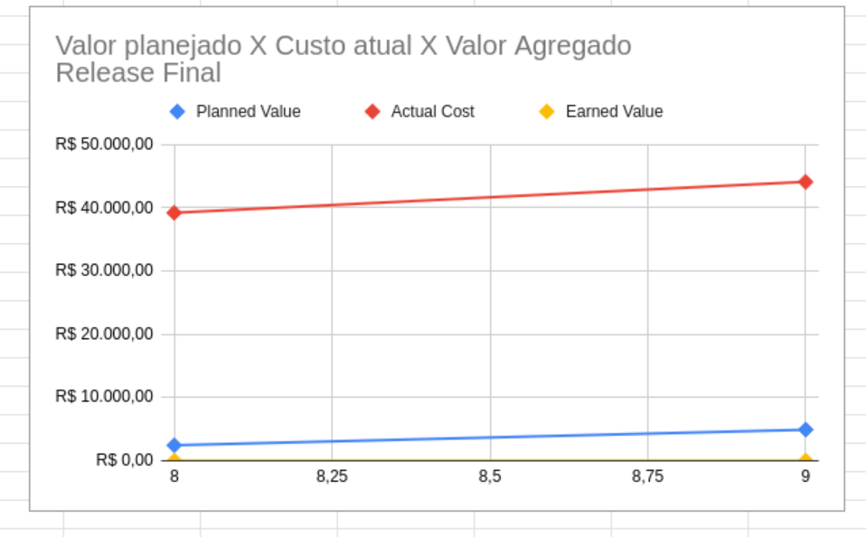

EVM (Earned Value Management)
O EVM (Earned Value Management), ou Gerenciamento do Valor Agregado, é uma metodologia amplamente utilizada em gerenciamento de projetos para medir o desempenho e o progresso de um projeto de forma objetiva. Ele integra escopo, cronograma e custos, permitindo que os gerentes de projeto avaliem se o projeto está dentro do prazo, do orçamento e se está entregando o valor esperado.
O EVM utiliza três métricas principais para avaliar o desempenho do projeto:
- PV (Planned Value) - Valor Planejado:
Representa o valor do trabalho que deveria ter sido concluído até um determinado ponto no tempo, de acordo com o plano do projeto. É o custo orçado para o trabalho planejado.
[ PV = \% \text{ do trabalho planejado} \times \text{Orçamento Total (BAC)} ]
- EV (Earned Value) - Valor Agregado:
Representa o valor do trabalho que foi realmente concluído até o momento. É o custo orçado para o trabalho realizado.
[ EV = \% \text{ do trabalho realizado} \times \text{Orçamento Total (BAC)} ]
- AC (Actual Cost) - Custo Real:
Representa os custos reais incorridos para realizar o trabalho até o momento. É o valor gasto para concluir o trabalho realizado.
[ AC = \text{Custos reais incorridos} ]
Fórmulas do EVM
1. Variações de Desempenho
- CV (Cost Variance) - Variação de Custo:
Mostra se o projeto está acima ou abaixo do orçamento.
[ CV = EV - AC ] - Se ( CV > 0 ): Projeto abaixo do orçamento (bom).
-
Se ( CV < 0 ): Projeto acima do orçamento (ruim).
-
SV (Schedule Variance) - Variação de Prazo:
Mostra se o projeto está adiantado ou atrasado em relação ao cronograma.
[ SV = EV - PV ] - Se ( SV > 0 ): Projeto adiantado (bom).
- Se ( SV < 0 ): Projeto atrasado (ruim).
2. Índices de Desempenho
- CPI (Cost Performance Index) - Índice de Desempenho de Custo:
Mede a eficiência do uso dos recursos.
[ CPI = \frac{EV}{AC} ] - Se ( CPI > 1 ): Custo menor que o planejado (bom).
-
Se ( CPI < 1 ): Custo maior que o planejado (ruim).
-
SPI (Schedule Performance Index) - Índice de Desempenho de Prazo:
Mede a eficiência do tempo em relação ao cronograma.
[ SPI = \frac{EV}{PV} ] - Se ( SPI > 1 ): Projeto adiantado (bom).
- Se ( SPI < 1 ): Projeto atrasado (ruim).
3. Previsões Futuras
-
ETC (Estimate to Complete) - Estimativa para Concluir:
Estimativa dos custos necessários para concluir o trabalho restante.
[ ETC = \frac{BAC - EV}{CPI} \quad \text{(considerando o desempenho atual)} ] -
EAC (Estimate at Completion) - Estimativa no Término:
Estimativa do custo total do projeto ao final, com base no desempenho atual.
[ EAC = AC + ETC ] Ou, se o desempenho futuro for igual ao planejado:
[ EAC = AC + (BAC - EV) ] -
VAC (Variance at Completion) - Variação no Término:
Diferença entre o orçamento total (BAC) e a estimativa no término (EAC).
[ VAC = BAC - EAC ] - Se ( VAC > 0 ): Projeto abaixo do orçamento (bom).
-
Se ( VAC < 0 ): Projeto acima do orçamento (ruim).
-
TCPI (To Complete Performance Index) - Índice de Desempenho para Concluir:
Mede a eficiência necessária para concluir o projeto dentro do orçamento restante.
[ TCPI = \frac{BAC - EV}{BAC - AC} ] - Se ( TCPI > 1 ): É necessário melhorar o desempenho.
- Se ( TCPI < 1 ): O desempenho atual é suficiente.
Caso exista maior interesse sobre a metodologia Agile EVM, o material referente à ela pode ser encontrado no seguinte artigo: AgileEVM – Earned Value Management in Scrum ProjectsTexto do link.
EVM - Sentinela
O processo de monitoramento do projeto se iniciou durante a release 1. Com os custos do projeto já relatados no documento de Custos.
Análise das Major Releases
Com base nos gráficos gerados por sprint, que comparam o Valor Agregado X Custo Atual X Valor Planejado, é possível avaliar o desempenho de cada major release entregue pela equipe.
Análise da Release 1
A Release 1 teve um ciclo de desenvolvimento de duas semanas, com um planejamento que previa a entrega de aproximadamente 25% do valor agregado total do sistema. No entanto, devido a desafios iniciais enfrentados pela equipe no processo de válidação, o valor efetivamente entregue e aceito ficou abaixo da meta estabelecida.
Análise da Release MVP
A análise da Release MVP, representada pelo gráfico "Valor Planejado x Custo Atual x Valor Agregado", revelou importantes insights sobre o desempenho da equipe durante as sprints.
Desempenho Observado:
-
Custo Atual (Actual Cost): O custo real do projeto apresentou um crescimento contínuo e significativo, ultrapassando o valor planejado em todas as sprints. Isso indica que o esforço necessário para executar as atividades foi maior do que o previsto inicialmente.
-
Valor Planejado (Planned Value): O planejamento previa um aumento gradual nas entregas ao longo do período, com expectativas alinhadas ao progresso natural do desenvolvimento.
-
Valor Agregado (Earned Value): O valor efetivamente entregue e aceito ficou abaixo do planejado. Isso evidencia que as metas estabelecidas para cada sprint não foram completamente atingidas.
Conclusões:
- O custo elevado, combinado com entregas abaixo do esperado, aponta para ineficiências no processo de desenvolvimento e gestão de recursos.
- O recesso combinado com o atrazo dos testes feitas pelo POs e dificuldades iniciais da equipe podem ter contribuído para atrasos e menor produtividade, afetando diretamente o valor agregado.
- Ajustes no planejamento e na execução das tarefas foram necessários para evitar novos desvios no cronograma e no orçamento.
Este diagnóstico reforça a necessidade de otimizar os processos e aprimorar o alinhamento entre os recursos disponíveis e os objetivos definidos para as próximas releases.

Análise da Release Final
O gráfico "Valor Planejado x Custo Atual x Valor Agregado" da Release Final apresenta os resultados obtidos ao final do projeto, destacando a relação entre o planejamento, os custos e as entregas realizadas.
Desempenho Observado:
-
Custo Atual (Actual Cost): O custo real manteve-se elevado e estável em torno de R$ 40.000,00, representando um investimento significativo para a conclusão da release.
-
Valor Planejado (Planned Value): O planejamento previa uma entrega incremental, mas em níveis baixos, com o valor planejado ficando consideravelmente abaixo do custo real.
-
Valor Agregado (Earned Value): O valor efetivamente entregue ao final do projeto foi insignificante em relação ao valor planejado e ao custo real, indicando que os objetivos principais da release final não foram atingidos.
Conclusões:
- Baixa eficiência: Apesar do alto investimento financeiro, o valor agregado entregue foi praticamente inexistente, o que indica falhas significativas no gerenciamento e execução das atividades.
- Desalinhamento com o planejamento: O baixo valor planejado sugere expectativas conservadoras, mas, ainda assim, as entregas ficaram muito abaixo das metas estabelecidas.
- Impacto negativo no projeto: O desempenho da Release Final comprometeu a relação custo-benefício do projeto, sugerindo que os recursos foram mal alocados ou que imprevistos críticos impediram as entregas.
Essa análise reforça a importância de revisar processos e estratégias para garantir que as próximas iniciativas entreguem valor compatível com os recursos investidos.

Histórico de Versões
| Versão | Nome da Versão | Data | Responsável | Descrição/Alterações |
|---|---|---|---|---|
| 1.0 | Criação do documento | 09/02/2025 | Daniela Soares | Criação do documento |
Referências
AgileEVM – Earned Value Management in Scrum ProjectsTexto do link